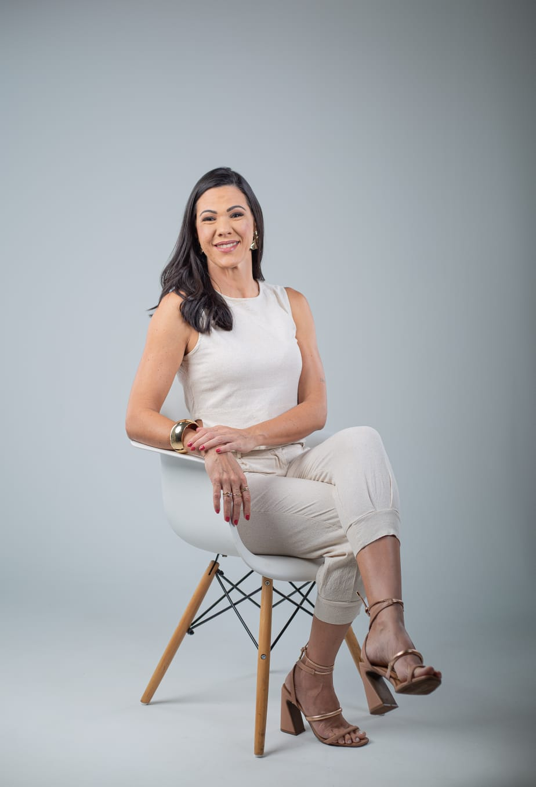
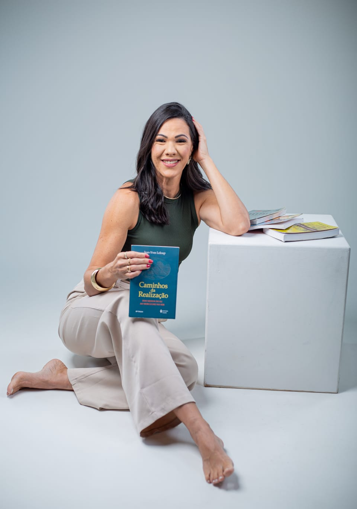

Vivendo no automático
Sem tempo ou espaço para perceber o que realmente sente.
A psicoterapia pode ajudar você a compreender suas emoções, reconhecer padrões e desenvolver uma relação mais consciente consigo.
Atendimento 100% online · Adolescentes, adultos e idosos

Talvez alguns desses sentimentos façam parte da sua rotina.
Sem tempo ou espaço para perceber o que realmente sente.
Ansiedade, angústia, tristeza ou pensamentos que parecem confusos.
Nas relações, escolhas ou na forma como você lida com as situações.
Abandono, abuso, rejeição ou conflitos que ainda impactam o presente.
Momentos em que tudo parece pesado ou sem direção.
Sentir que perdeu a conexão consigo e com o que deseja para sua vida.
Um processo de acolhimento, compreensão e desenvolvimento emocional.
Reconhecer o que sente e entender melhor suas necessidades.
Identificar comportamentos e relações que se repetem em sua vida.
Desenvolver mais presença, autonomia e autorresponsabilidade.
Encontrar formas mais conscientes de lidar com suas experiências e escolhas.

Sou psicóloga e acredito que cada pessoa possui uma história única, que merece ser acolhida e compreendida com respeito e sensibilidade.
Meu propósito é oferecer um espaço seguro de escuta e consciência, ajudando você a compreender suas emoções, reconhecer suas necessidades e construir uma relação mais presente consigo.
Minha trajetória com o cuidado emocional começou antes mesmo da Psicologia e hoje integro diferentes conhecimentos respeitando a singularidade de cada pessoa que chega até mim.
É um primeiro momento de acolhimento e escuta, para compreender o que você está vivendo e o que busca com a psicoterapia.
Sim. Todos os atendimentos são realizados online, proporcionando mais praticidade e conforto para você.
Atendo adolescentes, adultos e idosos, respeitando as necessidades e particularidades de cada fase da vida.
Cada sessão possui aproximadamente 50 minutos.
Não. Você não precisa chegar com tudo organizado. O processo também ajuda a compreender e dar sentido ao que você está sentindo.
Não. A psicoterapia também pode ser um espaço de autoconhecimento, desenvolvimento emocional e compreensão das suas experiências.
A frequência é definida de acordo com as necessidades de cada pessoa e com o acompanhamento terapêutico.
Sim. O atendimento psicológico segue os princípios éticos e de confidencialidade da profissão.
Se você sente que este pode ser o momento de olhar com mais cuidado para si, estou aqui para te acolher e caminhar com você nesse processo. Entre em contato para tirar suas dúvidas ou agendar sua sessão.